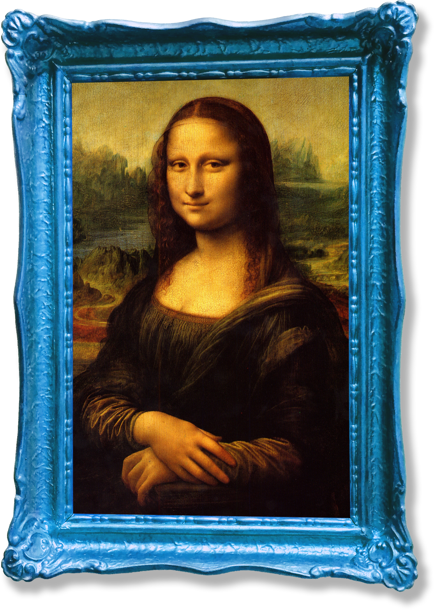

모방-하다
[…을] 다른 것을
본뜨거나 본받다.
으악
- 남의 작품을 모방하다.
- 어린이는 어른의 행동을 모방하는 것을 즐긴다.
- 우리나라의 한문학은 처음에는 중국의 것을
모방하였으나 점차 독자적인 성격을 띠게 되었다.
하늘 아래 새로운 것은 없다.
문득 떠오른 나의 독창적이고 기발한 생각을 누군가가 먼저 표현해 놓은 경우가 드물지 않다.
이를 분명히 보여주는 인터넷에는 온갖 콘텐츠들이 확대, 재생산 되고 있으며 특히 창작의 영역인
예술에서는 어디서 본 듯한 패러디와 오마주가 넘쳐난다. 나아가 표절 문제도 끊이지 않고 생겨난다.
오마주, 패러디 그리고 표절이란?

<모나리자>
레오나르도 다 빈치 (1503)